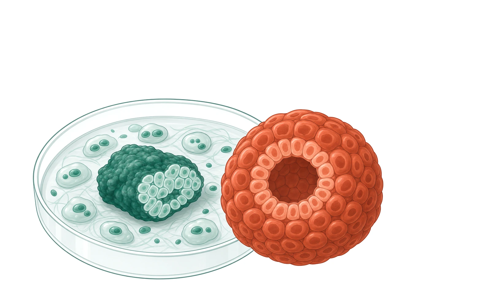
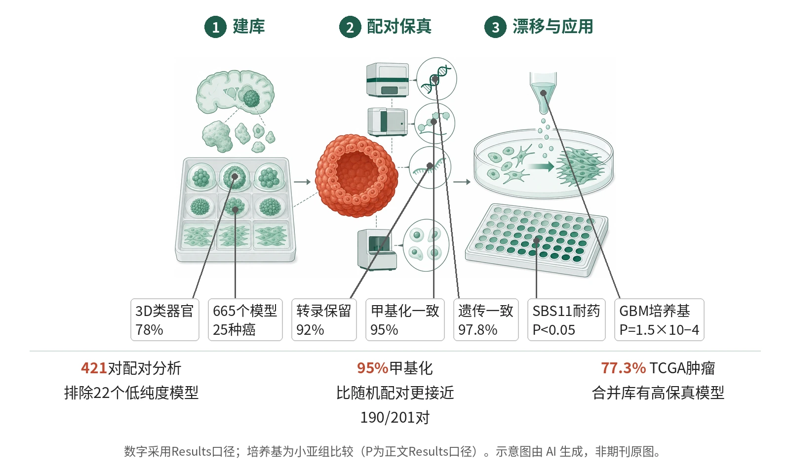

封面示意：培养皿中肿瘤组织块旁，赤陶红类器官为焦点。图片由 AI 生成，非原文图片。
在25种癌的665个患者来源模型中，421对配对分析显示97.8%保留至少两类DNA特征，甲基化一致性为95%。
主领域：精准肿瘤与临床转化 相关：类器官 / 患者来源类器官 / 全基因组测序 / DNA甲基化 / 单核RNA测序 / OncoMatch
关键数据卡
- 研究类型：国际多中心患者来源癌症模型资源构建与多组学配对分析
- 样本量 n：2,780名供者；665个模型；421对匹配肿瘤-模型用于核心一致性分析
- 对照：亲本肿瘤、随机配对背景、CCLE模型库（n=1,377）
- 随访：临床数据覆盖522个模型；总体生存随访范围0–34年；治疗后中位随访1.5年
- 主要终点：核心读出：模型与亲本肿瘤的遗传和表观遗传一致性；遗传一致性定义为至少保留驱动突变、突变特征、WGD和倍性四项DNA特征中的两项
- 主要终点结果：421对配对分析显示遗传一致性97.8%；201对甲基化配对中190对（95%）比随机配对更接近（FDR<0.1）
- 统计量：甲基化FDR<0.1；GBM培养基Fisher’s exact test P=1.5×10−4；SBS11药敏Wilcoxon P<0.05
- 安全性：非治疗性资源研究，不涉及患者给药安全性终点
- 证据等级：全文
- 核对记录：读了Europe PMC fullTextXML PMC13581597的Abstract、Results、Discussion、Methods、Fig.1–6图注

- 建立患者来源模型库
- 配对测序评估保真度
- 定位培养基相关漂移
- 连接临床史与耐药
图示HCMI从多癌种患者标本建立可分发模型，再以亲本肿瘤配对的DNA、甲基化、RNA和单核转录组评估保真度；GBM培养条件提示状态漂移，ecDNA不一致多归因于低覆盖，临床史则支持耐药研究。示意图由 AI 生成，依据原文结果绘制，非期刊原图，不代表分子比例
研究背景与待解问题
癌症图谱已经积累了大量驱动事件、转录状态和耐药假说，但验证这些机制仍依赖能长期扩增、可分发、并保留亲本肿瘤特征的实验模型。既有细胞系超过1,000个，却常被批评表型复杂度有限、与原发标本关系不清、临床治疗史不足。
患者来源类器官、神经球和新型细胞系能改善这一缺口，但能否在长期培养后系统保留遗传、表观遗传和转录状态，并覆盖罕见癌与非欧洲血统人群，缺少大规模检验。ElHarouni等在Nature报告HCMI资源，目标是把可分发模型和配对多组学一起公开。
研究设计
项目在2016至2021年纳入2,780名同意参与者，最终从637名患者建立665个模型，覆盖25种癌；其中522个带综合临床数据，153个来自罕见癌，71个来自主要非欧洲血统供者。在形态上，78%为3D类器官（n=519），6%为3D球体（n=37），16%为2D贴壁患者来源细胞系（n=109）；遗传保真度分析还说明模型已在体外培养至少1年。
研究没有临床干预或随机分组，也不是为组间疗效比较设计效能。主要读出是配对亲本肿瘤与模型的多组学一致性：WGS/WES评估驱动突变、SNV/indel、LOH、WGD和倍性，甲基化、RNA-seq、Celligner、MOMA/OncoMatch评估状态保留，并以CCLE的1,377个模型作资源覆盖参照。
核心结果
核心保真度
421对配对分析给出了主读出：按DNA特征汇总，97.8%模型保留至少两类特征；在201对有甲基化数据的配对中，190对、即95%比随机配对更接近（FDR<0.1）。这一97.8%不是单一突变重合率，而是在22个低纯度模型被排除、留下643个优先模型后，模型至少保留驱动突变、突变特征、WGD和倍性四项DNA特征中的两项。
DNA层面细节
在420个可估计纯度的模型中，406个纯度>80%，仅9个显示与亲本不同的非整倍体模式；388对中361对LOH一致性超过80%，平均为94%。WGD状态在88%配对中被再现；10%为模型特异WGD，2%为肿瘤特异WGD，且模型特异WGD在突变时间线上更晚（P=0.047），与培养相关克隆选择或空间取样差异一致。
表观与转录
在201对有甲基化数据的配对中，190对、即95%比随机配对更接近（FDR<0.1）；11个表观遗传不一致模型中有9个来自纯度低于60%的肿瘤，提示不一致可能偏向样本伪影。转录层面，Celligner在297对中判定242对、即81%显著一致；286个至少被4种方法评估的模型中，263个、即92%至多被1种方法判为不一致。
漂移与培养基
培养基效应集中在GBM：NeuroCult NSA培养模型比Propagenix条件培养基模型更接近亲本肿瘤（P=1.5×10−4），但总体比较只有3个CM配对和37个NSA配对；在16对单核RNA测序中，条件培养基GBM模型几乎完全转向间质样状态。ecDNA是保真度的弱项：212个事件中93个、即43.9%为模型特异，69个、即32.5%为肿瘤特异；作者把多数不一致归因于低测序覆盖。
转化覆盖度
与CCLE的1,377个模型相比，HCMI在19种癌里11种OncoMatch表现更好，CCLE在6种更好；其中4种为HCMI≤10个模型的小队列。两库合并后，77.3%的TCGA肿瘤（n=6,902）至少有1个高保真模型（NES≥10）。携带SBS11的GBM模型对替莫唑胺敏感性低于非SBS11模型（Wilcoxon P<0.05），且独立于MGMT启动子甲基化状态。
机制解读
原文实验证明：原文直接证明的链条首先是“配对保留”：同一供者的肿瘤和模型在DNA、甲基化、RNA层面多指标相似。驱动突变、突变签名、WGD和倍性组成的DNA汇总指标给出97.8%一致；甲基化190/201对显著接近随机背景；转录上263/286个模型未被多方法一致判为漂移。
第二条链条是“培养条件可改变细胞状态”。GBM中，NSA与条件培养基的Celligner相似性差异有统计检验；HCM-BROD-0416-C71从NSA切换到配方条件培养基后，出现形态改变、SOX2核强度下降和72小时、2周的转录标志变化。单核RNA测序进一步显示，部分GBM模型向间质样状态偏移。
作者推测：作者推测，少数不一致来自三类过程：培养时丢失亲本肿瘤中的基质和免疫浸润，相当于“纯化”；小克隆在体外被选择性扩增；以及培养基诱导的表观和转录可塑性。对于ecDNA不一致，作者主要归因于低覆盖度，也提出体内外生长条件可能选择或反选择ecDNA扩增。
局限与不确定
- 第一，外推性受队列结构限制。665个模型覆盖25种癌，但欧洲血统占85%，主要非欧洲血统模型为71个，对非欧洲血统人群的外推受限。
- 第二，终点是分子保真度和模型覆盖，不是患者获益。522个模型带临床数据，治疗后中位随访1.5年、总体生存范围0–34年，但没有前瞻性用模型指导治疗的临床验证。
- 第三，方法层面存在模型格式限制。作者明确指出，HCMI模型缺少基质和免疫细胞，限制其用于免疫反应研究；多样性也不足，尽管已有153个罕见癌模型和38个近期非洲血统患者模型。
- 第四，部分结论依赖小亚组或测序条件。GBM培养基比较只有3个CM配对和37个NSA配对；ecDNA中43.9%模型特异、32.5%肿瘤特异，作者主要归因为低测序覆盖。
临床/产业意义
如果研究者要在药物筛选、CRISPR依赖性图谱或耐药机制研究中选择患者来源模型，HCMI把665个可分发模型、亲本肿瘤多组学和临床治疗史连在一起。对罕见癌、胰腺癌、食管癌、结直肠癌等模型稀缺领域，它提供了更接近亲本肿瘤的候选体系。
但这项工作更像基础设施而非治疗发现。只有在实验问题与模型边界相匹配时，例如研究肿瘤细胞内在遗传依赖、SBS11相关替莫唑胺耐药，或用OncoMatch寻找代表性模型，DNA保真度才可能转化为可操作优势。
作者、出处与核对
ElHarouni D, Al-Jazrawe M, Choi S, Dede M, Hinoue T, Misek SA, et al. A compendium of next-generation patient-derived models for diverse cancers. Nature. 2026. https://doi.org/10.1038/s41586-026-10806-y
证据等级：全文；核对记录：读了Europe PMC fullTextXML PMC13581597的Abstract、Results、Discussion、Methods、Fig.1–6图注